孖仔帮与您分享双胞胎育儿经
点击蓝字
关注我们
文|圆圈妈，一个文思如尿崩的双胎妈妈
01
双十一马上来了，各大育儿群炸锅似的分享购物车好物，买买买的气氛愈演愈烈。
也有新手妈妈爸爸表示苦恼极了，逛了一天某宝，某东，某会…那个晕菜啊！最后都不知道自己为啥要网购了。
孖仔帮后台也不小心蹭了下双十一的热点，收到好多留言咨询双胞胎宝宝的囤货，而咨询最多的就是婴儿床和婴儿车，两者并列第一。
我知道你们在想什么，有严重选择综合征的我也曾经为了这两位大BOSS在淘宝上热血奋战了一整天，无果…最后把网线给拔了，APP 给卸了…
昨晚熬夜把3年前我给圆圈兄弟选购婴儿车时做的功课整理了下，分享给深陷双胞胎婴儿车选购中一头雾水的新手爸妈。
希望对你们有所启发，从而确定自己心仪的婴儿车。
这篇文章只针对双胞胎婴儿车的款式选择做简单说明和分析，不做双胞胎婴儿车品牌的对比和介绍。
02
请问下，当你在选购双胞胎婴儿车时，是不是会冒出以下这些问号：
买单人款的还是连在一起的？单人款的话，适合双胞胎吗？连在一起的话，前后还是并排？
再者，座椅朝向怎样才合适？面对面还是同朝向？
实际使用时，操作方便吗？会不会很麻烦？
哪个品牌比较好，钱袋子有限，高大上的买不起，矮矬穷的看不上。
到底有没有物美价廉的品牌双胞胎婴儿车？
带着这些疑问，先来了解下双胞胎婴儿车的分类。
目前市面上针对双胞胎的婴儿车大致有两种，分并排和前后。
因品牌功能不同，还细分了很多款式，如高景观，可折叠，可拆分，座椅面对面或同朝向等。
并排式和前后式均有各自的优缺点，双胞胎家庭可根据自身情况针对性选择。
以下是双胞胎婴儿车并排款和前后款优缺点大比拼。
蓝
队
红
队
双胞胎婴儿车并排款
优点：
喂奶方便，出行的时候便于和两个宝宝同时交流和照顾他们。
两人的视线一致，不存在哪个视野好与不好的区别，以后不会有两宝宝抢位置的烦恼。据说两宝都想争做前面，因为视野好，无遮挡。
两宝宝稍大一点后，可以相互一起玩耍。
缺点：
比较局限，遇到超窄人行道或狭小的通道和门，无法顺利进出，出入地铁闸机门，必须走人工通道才行。
有些公众场所的电梯门比较窄，只能收车进入…
这是不可拆分的并排婴儿车最大的痛点。
双胞胎婴儿车前后款
优点：
前后款解决了并排款的难题，宽度跟独立婴儿车差不多，基本上没有车身宽度问题过大的困扰。
两个座椅可调节成面对面或前后同方向，可观赏到不同视野的风景，尤其适合高需求的宝宝。
有些进口大牌的婴儿车座椅还能随时根据需求360°换向，面对面式，前后式…
缺点：
车身较长，不好推，方向难控制。折叠后还要清空后备箱才能勉强放下。
若两宝宝同时平躺，空间有限，后座的宝宝会有点憋屈，新生儿期尚且可以，稍大一点就显得很挤。
分析完优缺点之后，我们大概就知道选购时应该考虑的因素，再结合各自的实际情况去衡量。
这个实际情况就是，问下自己，你需要婴儿车来为你和两宝宝们做什么？
在家里推着晃一晃，或者推出去小区体验下日光浴和空气浴，或者是走去更远的公园散步，开阔宝宝视野。
明确婴儿车用途之后，再全面考虑下各种场合的适用性，最后排除法，得出最适合自己和宝宝的婴儿车。
其实不管是并排婴儿车还是前后婴儿车，都需要考虑一点，即车身折叠前和折叠后的宽度长度。
是不是可以在不收车的情况下正常通过小区门禁，电梯门和家里的大门。
还有家庭用车的后备箱，折叠后是否能容纳下。
因为婴儿车的意义在于给双胞胎家庭提供方便，若进不了门或者塞不进车里，尽添烦恼，一切都是徒劳。
因此，别急着下单付款，先拿把尺子去量下家里的大门和车后备箱的尺寸，然后去实体店看下展示品掂量下。
最后，解决完款式问题后，再去考虑婴儿车的品牌和价格！
从我接触到的双胎妈妈，大多数都是选并排款的，而我个人觉得，如果并排式的婴儿车能满足平时需要通过的各种通道及门的宽度要求，那么并排座位车其实更实用一些。
我在选购的时候，用排除法，首选放弃前后款，但最后买了两辆一模一样单人婴儿车。（中间爆发了一场家庭恶战…此处省略一万字!）
03
截至目前为止，我给圆圈只买过3款车，一个是可坐可躺的单人婴儿车，一个是只能坐不能躺的单人伞车，最后是双人位前后座面对面的竹推车。
说说我为什么最后买了两辆单人婴儿车的原因：
相对双胞胎专用的婴儿车，单人婴儿车至少便宜一半，当时预算低，只好将就着用了！
因为当时住的是楼梯房，双胞胎婴儿车普遍都是25斤重以上，考虑到老人家每天搬上搬下确实累得慌。
单人婴儿车适用性强，以后闲置处理也相对容易些。
而最关键一点是考虑到两宝宝的作息不可能时刻保持一致，也担心他们坐不惯婴儿车，一个要抱着，另一个要推着或者两个都想要抱着，此时婴儿车就无用武之地了。
说说给圆圈兄弟用单人婴儿车的使用心得：
优点：
灵活，方便，相互不影响，白天睡觉时放不同房间睡，哭闹，喂奶…彼此不打扰。
他们很少同步，经常是有一个睡着了，有一个清醒着，这个时候就可以分开行动，把睡着的那只放家里，清醒的那只推出去晒太阳。
若外出时遇到其他事情，比如我和圆圈爸推一个去买菜，另一个则让圆圈爷爷奶奶推着先回去，也可以自由DIY，不受影响。
缺点：
每次出门需要两个大人推着婴儿车，小月龄的时候，必须标配4个大人才敢出门！
我和圆圈爸在圆圈满1岁前都没有勇气带着他们说走就走，因为臣妾真的搞不掂两个崽啊！
当时不知道市面有可拆分的双胞胎婴儿车，那时候就觉得要是世界上有可拆分的婴儿车该多好啊！解决了以上所有问题。
可怜我3年前孤陋寡闻！生完两儿子之后忘记带脑子出院了！
这几天了解了下可拆分的婴儿车，真的太赞了。
我真希望时光可以倒退3年，让我能毫不犹豫买下可拆分婴儿车，以下是我对可拆分婴儿车的看法：
优点：
能拼接，可拆分，想分就分，想合就合，随时随地，非常灵活，方便。
遇到狭窄通道，不用收车，直接拆分，即可通行，省去收车的繁冗动作。
当遇到两宝宝一个睡神，一个睡渣的时候，就拆分开来，睡神继续留家里当“睡美人”，睡渣则得偿所愿出门溜达去。
当一家人去购物时，就组合起来，爸爸推婴儿车，妈妈选购…
具备单人婴儿车的优点又克服了双人婴儿车的缺点，真是省心不少。简直完美！
当然，凡事都有两面，可拆分婴儿车也有缺点，非常考验钱袋子和品牌。
有些普通品牌的婴儿车有这个功能，可能技术达不到，设计不合理，折腾的半天才拆分成功。
很多家庭在实际使用中因拆分麻烦而懒得拆分，实用性不高，从而就失去了可拆分婴儿车的意义。
而大品牌应该没有这方面的困扰，简单轻按几下就能在单人和双人模式之间切换模式，超省事！
当然一分钱一分货。
想要高质量享受这种功能，还得看下钱袋子同不同意。
04
婴儿车的学门多了去，实在是三言两语难以说清。
我写这个推文，并不是介绍某个品牌或者建议你必须买哪个款式，而是给一些购买时应该考虑的因素，让大家不至于太迷茫而无从下手，最终选择权还是在于你自己哦！
双十一大促销并不能成为大家盲目购买的理由，毕竟是两宝宝的人生第一辆坐骑啊，得好好慎重选择。多比较！多看看！
不是还有15天时间好好考虑嘛...O(∩_∩)O哈哈~
希望看完此文后，大家都能有所获，如文章没有提到的信息，或者在选购双胞胎婴儿车过程中还有其他疑虑的，欢迎补充，留言咨询！
关于双胞胎宝宝的其他囤货清单，可看孖仔帮前几期推文《看过这份最简单的双胞胎宝宝用品囤货清单，其他的都是将就》，关注孖仔帮，对话框输入“222”即可阅读。
孖仔帮有双胞胎爸爸专属群啦！
在此你们可以互相交流下初为人父的喜悦和已为人父的辛酸，还有你们男人间的家长里短…尽情唠嗑吧！
入群方式：＋圆圈妈的微信(sgguy-com)，我会发群聊邀请给你们。欢迎准爸爸的加入双胞胎育儿大家庭，一起分享双胞胎育儿经。
END
本文系圆圈妈sgguy-com原创，来源于孖仔帮，专注双胞胎孕期育儿经验分享，著作权归孖仔帮所有。
105:同卵双胞胎的天敌--双胞胎输血综合征
201:双胞胎与唐氏筛查---美丽的邂逅
212:原来双胎妈妈可以这样数胎动，好简单啊
215:双胎子宫日记系列|（下）你看不看？双胞胎妈妈直播剖腹产全过程
302:喂养干货||如何训练双胞胎宝宝睡整夜觉
306: 真人示范！双胞胎妈妈高难度喂母乳技巧
404:双胞胎家庭生存技巧01：舍不得孩子套不住狼，新生入园开学季必备
714:那个每天晚上9点钟才到家的双胎妈妈，失业了…
219双胞胎准爸爸的生存指南：不做猪一样的队友，活着出来喜当爹
220双胞胎准妈妈，其实你的产检方式一直搞错了…
222:看过这份最简单的双胞胎宝宝用品囤货清单，其他的都是将就
我猜你肯定喜欢看上面的文章，对不对嘛？关注孖仔帮，回复文章前面的数字编号即可阅读。
长按识别二维码关注我们
关于这个号
谢谢关注！我是圆圈妈
85后，全职双胎妈妈
家有孖仔男宝两枚，圆圈&圈圈
双胞胎育儿公众号：孖仔帮
旨意分享双胞胎育儿经验帮助双胞胎家庭
有经验可循
有组织可靠
希望我的经验对您有所启发
期待与您一起共享双胞胎育儿经
孖仔帮目前有4个微信社群
孕期群，喂养群，闲置群，双胞胎爸爸专属群，
如需入交流群，请+圆圈妈的微信号sgguy-com,或扫描下方二维码
由圆圈妈邀请入群
更多孖仔帮双胞胎原创育儿文章请猛戳 "阅读原文" 或者直接上圆圈妈的个人博客。
博客链接：https://www.sgguy.com/twinsbang

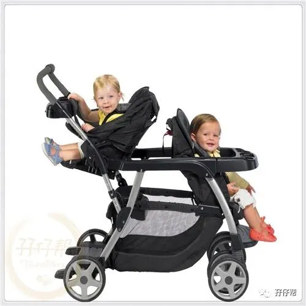
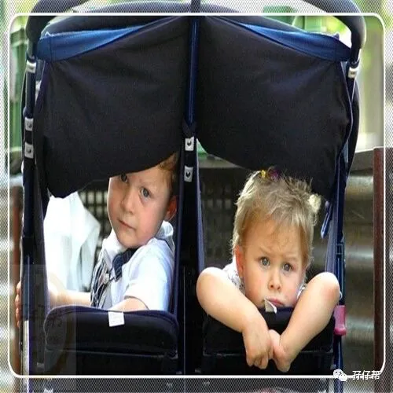
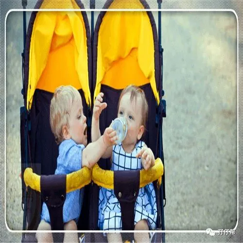
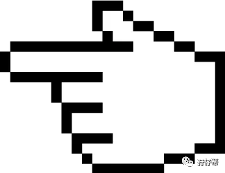
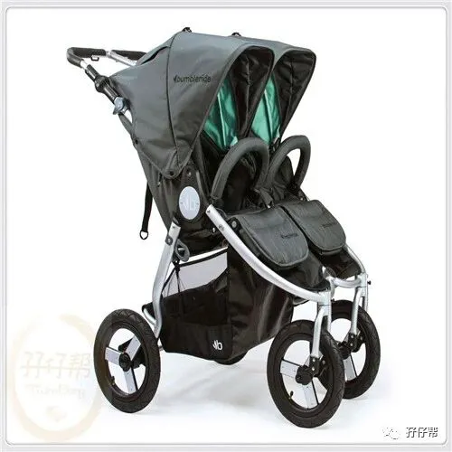
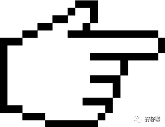
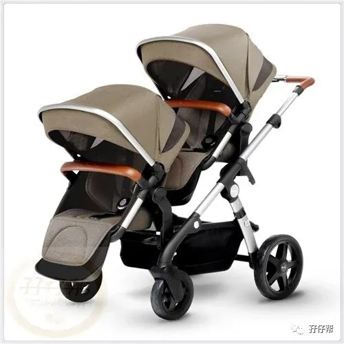
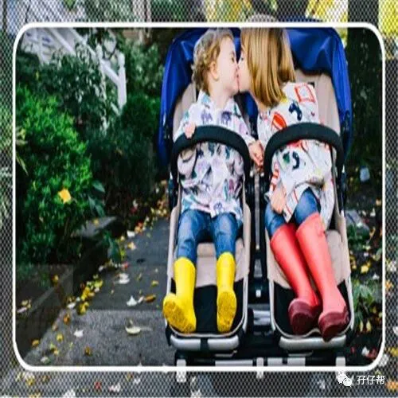
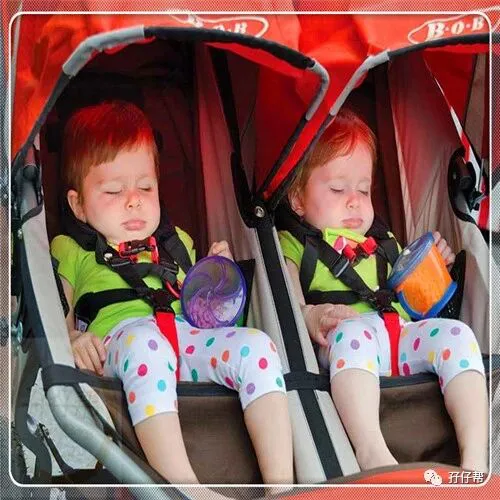
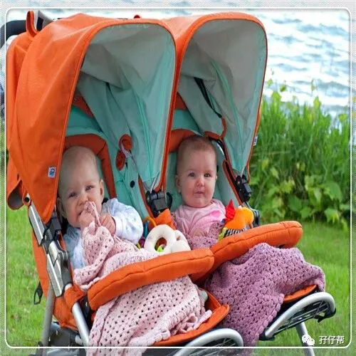
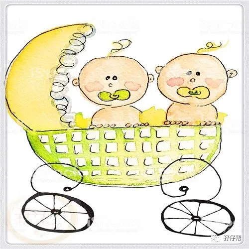
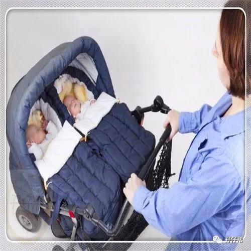
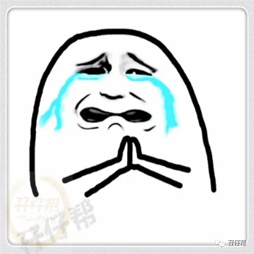
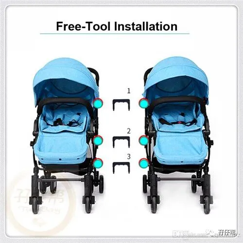
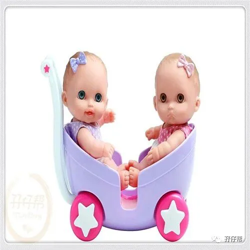
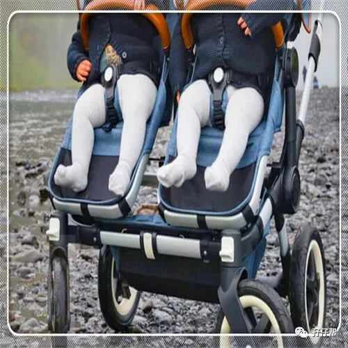